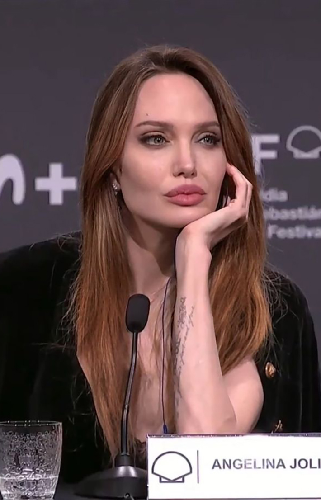

Анжеліна Джолі
Анжеліна Джолі — американська акторка, кінорежисерка та фотомодель, володарка премії «Оскар». Вона відома не лише своїми яскравими ролями в кіно, а й активною гуманітарною діяльністю по всьому світу.
Відомі фільми:
- Лара Крофт: Розкрадачка гробниць
- Чаклунка
Бред Пітт
Бред Пітт — видатний американський актор і кінопродюсер, лауреат премій «Оскар» та «Золотий глобус». Протягом своєї кар'єри він зіграв десятки культових ролей у драмах, трилерах та бойовиках.
Відомі фільми:
- Бійцівський клуб
- Одного разу в… Голлівуді
Спільні фільми
Актори разом зіграли у двох відомих стрічках:
- «Містер і місіс Сміт» (2005)
- «Біля моря» (2015)
Комедійний бойовик «Містер і місіс Сміт» розповідає про подружню пару, яка живе звичайним нудним життям. Проте згодом виявляється, що обоє з них — першокласні наймані вбивці, які працюють на конкуруючі організації та отримують замовлення одне на одного.
Про фільм «Містер і місіс Сміт»